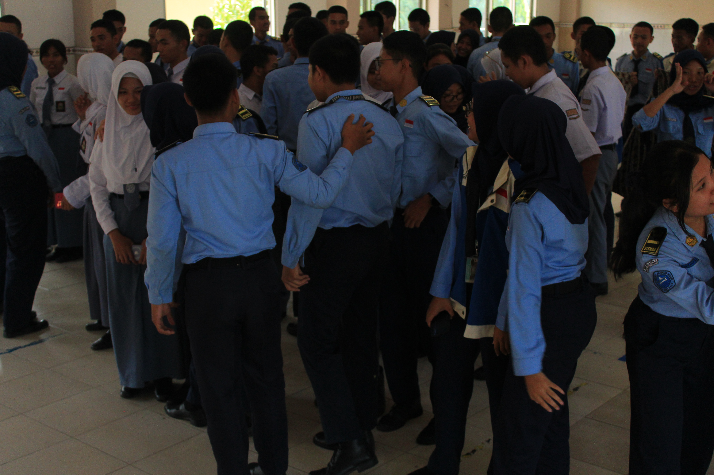
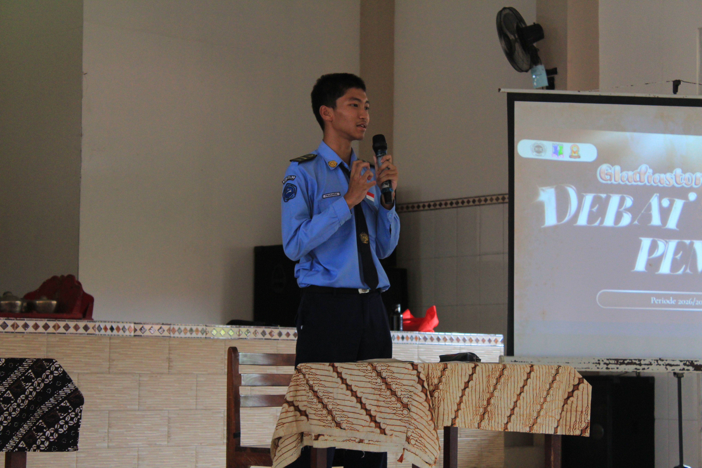
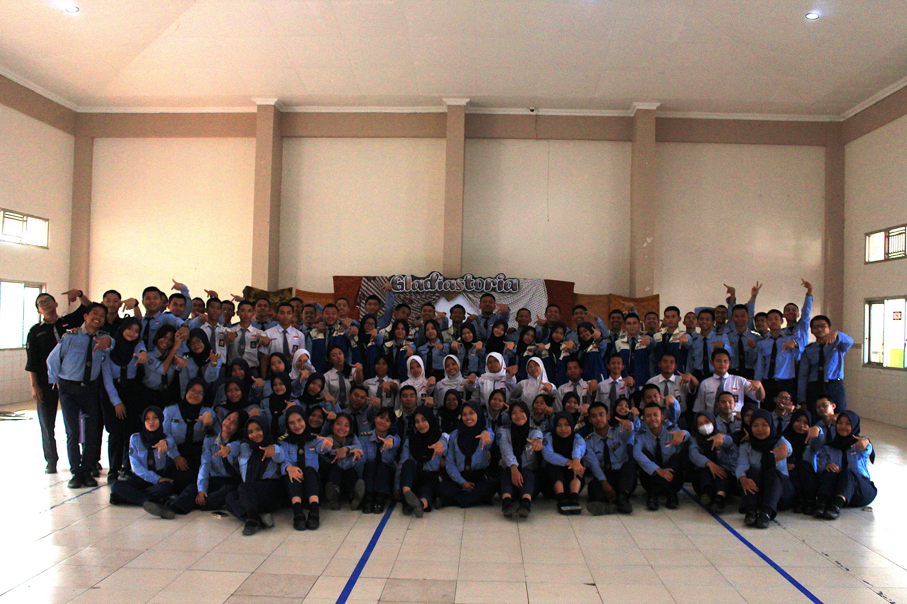

Perilaku demokratis adalah sikap dan tindakan yang mencerminkan nilai-nilai demokrasi — yakni menghargai kebebasan berpendapat, menjunjung hak asasi manusia, dan mengutamakan musyawarah dalam pengambilan keputusan. Berikut definisi dari sumber terpercaya:
Demokrasi adalah bentuk atau sistem pemerintahan yang segenap rakyat turut serta memerintah dengan perantaraan wakilnya; pemerintahan rakyat.
Demokrasi adalah sistem pemerintahan dari rakyat, oleh rakyat, dan untuk rakyat, di mana kekuasaan tertinggi berada di tangan rakyat.
Minimal 3 contoh perilaku demokratis dalam kehidupan sehari-hari — klik atau hover kartu untuk melihat rincian!

01Menghargai Pendapat Orang Lain
Saat diskusi kelas atau rapat OSIS, setiap anggota mendengarkan pendapat temannya tanpa memotong pembicaraan dan tidak memaksakan pandangan pribadi.

02Menyampaikan Kritik Secara Santun
Menyampaikan ketidaksetujuan atau saran dengan bahasa yang sopan dan konstruktif — bukan menyerang pribadi, melainkan membahas substansi permasalahan.

03Menjunjung Keputusan Bersama
Setelah musyawarah mufakat atau voting, semua pihak menerima dan melaksanakan hasil keputusan bersama dengan lapang dada meski berbeda dari pendapat awal.